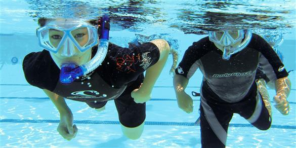
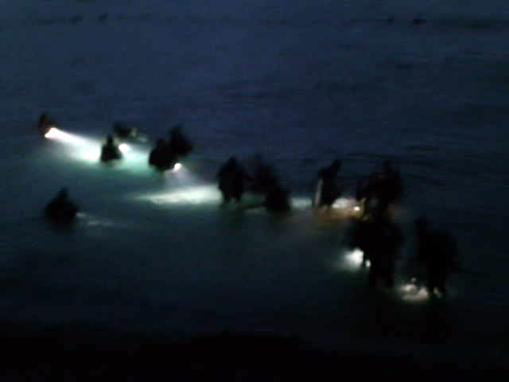

- Calendar
- Education
- Beginners
- Beyond The Basics
- Freediving
- Prepared Diver
- Beyond the Edge
- Go Pro
- Experienced Diver
- Kids Programs
- Boy Scouts
- Camp Emerald Bay Videos
- About Camp Emerald Bay Catalina
- SCUBA BSA (Discover Scuba Diving) Partial Day
- Rugged Scuba Diver
- Rugged Oceanographers
- Rugged Rescue Divers
- Rugged Specialty Programs (Partial Day/Night)
- Discover Local Diving Programs (Partial Day/Night)
- Discover Snorkeling and PADI Skin Diver (Partial Day/Night)
- Pro Diver Programs
- Educational Series
- University Programs
- Travel
- Dive Travel
- World-Wide Diving
- So-Cal Destinations
- Local LA Dive Sites
- About Local LA Dive Sites
- Avalon (Wreck)
- Big Rock Beach
- Broad Beach
- Carbon Beach
- Corral Canyon Beach
- County Line Beach
- Deer Creek Beach
- El Matador Beach
- El Pescador Beach
- Escondido Beach
- Geffens Beach
- La Piedra Beach
- Las Tunas Beach
- Latigo Beach
- Leo Carrillo Beach
- Little Dume Beach
- Malibu Pier/Surfrider Beach
- Nicholas Canyon Beach
- Old Malibu Road Beach
- Palawan (Wreck)
- Paradise Cove Beach
- Point Dume - Westward Beach
- Star of Scotland (Wreck)
- Sunset Beach
- Topanga Beach
- Veterans Park Beach
- Boat Charters
- Special Dives & Events
- Gear
- Store
- Gallery
- About Us
- Blog
Education
Boy Scouts
Discover Snorkeling and PADI Skin Diver (Partial Day/Night)
Easy to Learn & Fun to Do Anywhere
Discover Snorkeling - 1 day time, 1-2 hours incl. briefing $30.00 (Malibu $55)
Snorkeling is using a mask and snorkel to breathe comfortably while looking underwater from the surface. Snorkelers may also use fins, buoyancy vests, and exposure suits, although this equipment may not be necessary depending on the environment. Snorkelers generally stay on the surface, although they may perform occasional dives to get a better look at something below.
Discover Snorkeling is an experience, not a course. It’s a supervised snorkeling tour. Snorkelers can return to you many times to participate in different Discover Snorkeling tours. Introducing snorkelers to surface dives and equalization can be part of the tips given by the Discover Snorkeling tour leader, however, this is done only if the snorkeler wants to learn these skills.
Prerequisites:
There are no age limits
Please be comfortable swimming and in the water either at a pool or in the ocean.
There are no age limits
Please be comfortable swimming and in the water either at a pool or in the ocean.
PADI Skin Diver program - 1 day time, 1-2 hours incl. briefing $30.00 (Malibu $55)
Skin divers use masks, snorkels, fins and buoyancy vests to both snorkel on the surface and make breath-hold dives. Skin divers, on the other hand, are proficient at properly adjusting their equipment and buoyancy, equalizing air spaces while diving and clearing their snorkels of water. Skin divers generally venture further than snorkelers and may make frequent surface dives.
The PADI Skin Diver course is structured and has specific performance requirements. Skin Diver students must demonstrate proficiency in surface dives, equalization and ascent techniques. Once the course is completed, students may optionally earn a PADI Skin Diver certification (additional fee).
Prerequisites:
You must be at least:* Minimum Age for this Course: 8 years old;
You need adequate swimming skills and comfort in the water. No prior experience is required.
Add Night Snorkel & Skin Diving

There are 3 ways to attend Night Snorkel Program dive:
1) As an optional upgrade to RS, Rugged SCUBA, aka Open Water Diver training. We already include the snorkeling/skin diving during daytime for confined and open water scuba diving training during the week long program. One evening, we offer night snorkel experience. It includes students using lights, and a briefing covering safety, night marine life, etc.
PADI Open Water Program/Rugged SCUBA Program - upgrade to night snorkel $10.00 (Malibu $25)
2) As a continuation of the PADI Discover Snorkeling or Skin Diver course, in the Open Water portion of either of these courses. We conduct the PADI Discover Snorkeling or Skin Diver during day time hours for confined and open water. Once successfully completed, those students who want to add a night snorkel open water dive would be eligible.
PADI Discover Snorkeling / Skin Diver - adding night snorkel, 1 hr $20.00 (Malibu $40)
3) As a continuation of the BSA Snorkel program. BSA staff conducts per BSA standards (see link), Proof of the BSA Snorkel program during day time hours for confined and open water. Once successfully completed, those students would be eligible for night snorkel open water dive.
BSA Snorkeler - adding night snorkel, 1 hr $20.00
(Malibu $40)
NOTE: Additional release above for options #2 or #3 (option #1 already covered with Open Water/Rugged Scuba program)
Your Next Adventure
This course provides you with more experience and skills to enhance your time in the water. If you are interested in further broadening your knowledge in skin diving, take it to the next level with Freediving program. You may also be ready to go get SCUBA certified. If you're already a certified diver, you'll also enjoy taking a Night Diver specialty courses or recognize what those critters are on your night dive with the AWARE REEF/Fish Identification course and then snap their photo with precision with the Digital Underwater Photography
Facebook Feed
Blog Feed
- Peace Boat to Anacapa: Sea Lions, Dolphins & Whales Oh My! 06-Feb-2016
- What Does Drowning look like? 26-Apr-2015
- No Cell Phones Allowed 04-Apr-2015
- Pro Scuba Training Lets You See the Real Picture 26-Mar-2015
- Love Diving? Take Your Passion One Step Further: Become a Rescue Diver 20-Mar-2015
- What Goes Down Must Come Up 02-Mar-2015
- So You Want To Be A Scuba Instructor? Read This Story 30-Jan-2015
- Not Just A Summer Vacation idea with Kids 23-May-2014
- Pro Scuba Training for a Career You Love 09-May-2014
- Freediving For Fun 30-Apr-2014